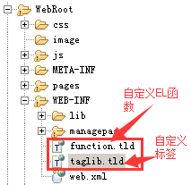

（1）自定义一个类，并实现接口 SimpleTag。
（2）override两个关键的方法，第一个是setJspContext，将该函数的JspContext类型的参数转变为PageContext类型，并被类成员引用，方便在类中其他方法中调用。
该JspContext是我们常用的四个作用域对象之一的PageContext类型的父类，通过类型转化为我们熟悉的pageContext后就可通过它获取我们所需要的其他三个作用
域对象了。
第二个是doTag。这个函数是整个自定义标签的核心，在页面上出现的自定义标签会根据<%@ taglib %>JSP处理指定 所引用到的xxx.tld文件中找到注册的实现了SimpleTag接口的类中的doTag方法，进而在服务器将JSP重组为Html的过程中调用这个自定义标签关联的类的doTag中的逻辑。
（3）写一个xxx.tld(名字任意)并将这个文件放入到Web应用的/WEB-INF目录下就可以了。

这个tld文件本质上就是一个xml文档，文档书写规范可以通过导入的JSTL包的jstl-impl-x.x.x.jar目录中的META-INF/maven中的任意一个tld文件找到。
参考形式如下：
（4）在需要使用这个标签的JSP页面通过<%@ taglib %> 导入tld（标签库定义文档），然后就可以在这个JSP页面上通过代码提示写入我们自定义的标签了。
如上面tld文档所定义的自定义标签，在JSP页面就可以如此引入
然后再这个JSP文档的任何<form></form>中就可以使用形如<mytag:token/>的自定义标签用来防止表单重复提交了。